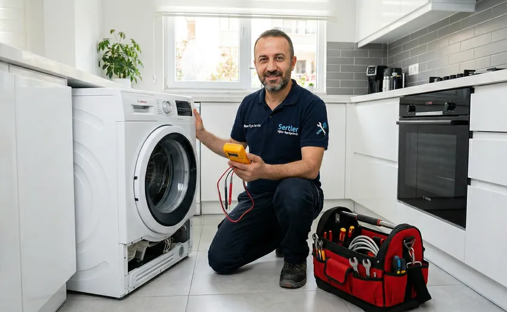
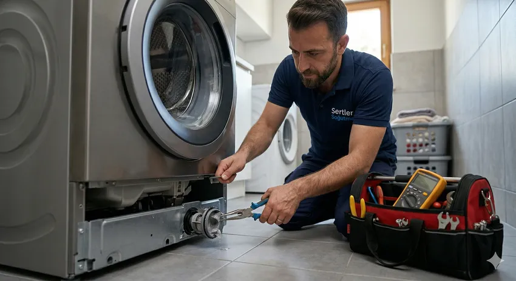

🛠️ Titreşim ve Gürültüye Son: Sertler Soğutma Tarsus Çamaşır Makinesi Tamircisi ile Makineleriniz Sessizleşsin!
Modern ev yaşantısının vazgeçilmez bir parçası olan çamaşır makineleri, hayatımızı kolaylaştıran teknolojilerin başında gelir. Ancak zamanla kullanım yoğunluğu, suyun sertlik derecesi veya elektriksel dalgalanmalar gibi faktörler, bu sessiz yardımcılarımızın performansında düşüşlere ve rahatsız edici gürültülere neden olabilir. Tarsus gibi hem iklimsel özellikleri hem de su yapısıyla cihazları zorlayan bir bölgede, profesyonel bir Tarsus Çamaşır Makinesi Tamircisi bulmak, sadece bir tamir işlemi değil, aynı zamanda evdeki huzuru geri kazanmak anlamına gelir. Sertler Soğutma olarak bizler, yılların verdiği deneyim ve teknik donanımla, makinenizdeki her türlü sarsıntı, gürültü ve arızayı ortadan kaldırmak için buradayız.
Çamaşır makinesi arızaları sadece fiziksel bir bozulma değildir; aynı zamanda günlük rutinin aksaması ve hijyen standartlarının düşmesi demektir. Bu süreçte doğru müdahale yapılmadığında, küçük bir gürültü zamanla büyük bir motor arızasına veya kazan değişimine yol açabilir. Sertler Soğutma çatısı altında sunduğumuz Tarsus Çamaşır Makinesi Tamircisi hizmeti, cihazınızın markası ne olursa olsun, en ince ayrıntısına kadar incelenmesini ve kalıcı çözümler üretilmesini hedefler. Tarsus’un her mahallesine ulaşan mobil servis ağımızla, çamaşır makinelerinizin ilk günkü sessizliğine ve verimliliğine kavuşmasını sağlıyoruz. Bu kapsamlı rehberimizde, çamaşır makinesi onarım dünyasına dair tüm detayları ve Sertler Soğutma'nın profesyonel yaklaşımlarını keşfedeceksiniz.

Tarsus Çamaşır Makinesi Tamircisi Uzman Kadrosu
Bir teknik servisin kalbi, onun uzman kadrosudur. Sertler Soğutma, Tarsus ve çevresinde sunduğu hizmetlerde, alanında sertifikalı ve sürekli eğitim alan bir teknik ekip ile çalışmaktadır. Bir Tarsus Çamaşır Makinesi Tamircisi olarak personelimiz, sadece mekanik bilgisiyle değil, aynı zamanda yeni nesil akıllı makinelerin elektronik kart sistemleri konusundaki uzmanlığıyla da öne çıkar. Uzman kadromuz, cihazınızın teknik spesifikasyonlarına hakimdir ve her markanın kendine özgü hata kodlarını, çalışma prensiplerini ezbere bilir.
Eğitim süreçlerimizde, personelimizi sadece teknik onarım konusunda değil, müşteri ilişkileri ve nezaket kuralları konusunda da donatıyoruz. Evinize gelen bir Sertler Soğutma teknisyeni, sorunu tespit ederken size arızanın nedenini, çözüm yolunu ve ileride benzer bir sorunla karşılaşmamak için neler yapmanız gerektiğini detaylıca anlatır. Uzman kadromuzun titiz çalışması sayesinde, tamir işlemleri sırasında evinizdeki diğer eşyalar zarar görmez ve çalışma alanı temiz bir şekilde teslim edilir. Tarsus genelinde en çok tercih edilen Tarsus Çamaşır Makinesi Tamircisi olmamızın arkasında, işini aşkla ve profesyonellikle yapan bu dinamik ekip yatmaktadır. Her geçen gün gelişen teknolojiye uyum sağlamak adına düzenli olarak teknik workshoplara katılan kadromuz, çamaşır makinesi teknolojilerindeki en son yenilikleri Tarsus’taki evlerinize taşır.
Sertler Soğutma ile Teknik Onarım Desteği
Teknik onarım, sadece bozulan bir parçayı yenisiyle değiştirmekten çok daha derin bir süreçtir. Sertler Soğutma olarak sunduğumuz teknik destek, arızanın kök nedenini bulmaya odaklanır. Bir Tarsus Çamaşır Makinesi Tamircisi ihtiyacınız olduğunda bize ulaştığınızda, süreç profesyonel bir arıza tespiti ile başlar. Makineler bazen sadece basit bir yabancı cisim nedeniyle gürültü yaparken, bazen de amortisörlerin ömrünü tamamlaması nedeniyle kontrolsüz şekilde sarsılır. Teknik onarım desteğimizde, cihazın tüm bileşenleri bir bütün olarak ele alınır.
Onarım sürecinde kullandığımız ekipmanlar, sektördeki en son teknolojiye sahip ölçüm ve teşhis aletleridir. Dijital kart testlerinden, su basınç testlerine kadar her aşama kayıt altına alınır. Sertler Soğutma, onarım sırasında sadece mevcut problemi çözmekle kalmaz, aynı zamanda makinenin diğer hassas parçalarını da kontrol eder. Örneğin, bir pompa arızası giderilirken rezistansın kireç durumu veya kapı körüğünün yıpranma payı da gözden geçirilir. Bu bütünsel yaklaşım, bir Tarsus Çamaşır Makinesi Tamircisi olarak bizim en büyük farkımızdır. Müşterilerimize sunduğumuz teknik destek, sadece evdeki onarımla sınırlı değildir; telefon üzerinden verdiğimiz danışmanlık ve tamir sonrası sağladığımız güvence ile her zaman yanınızdayız. Profesyonel onarım, makinenizin ömrünü yıllarca uzatabilir ve sizi yüksek maliyetli yeni bir cihaz alma masrafından kurtarır.
Tarsus’ta En Yakın Çamaşır Makinesi Tamircisi
Arıza durumlarında zaman en büyük düşmandır. Biriken çamaşırlar ve aksayan günlük planlar, hızlı bir çözüm arayışını zorunlu kılar. Tarsus'un geniş coğrafyasına yayılmış olan servis ağımız sayesinde, "Bana en yakın Tarsus Çamaşır Makinesi Tamircisi nerede?" sorusunun yanıtı her zaman Sertler Soğutma'dır. Şehir merkezinden köylere, Şelale Mahallesi’nden Yenice’ye kadar her noktaya aynı hız ve kalitede hizmet götürüyoruz. Stratejik olarak konumlandırılmış mobil ekiplerimiz, çağrınızı aldığımız andan itibaren size en yakın noktadan harekete geçer.
Yerel bir firma olmanın avantajıyla, Tarsus’un her sokağını, her apartmanını avucumuzun içi gibi biliyoruz. Bu sayede adres bulma karmaşası yaşamadan, tam donanımlı araçlarımızla kısa sürede kapınızda oluyoruz. Tarsus Çamaşır Makinesi Tamircisi arayışınızda hız kadar güven de önemlidir. En yakın servis olmamız, sadece mesafe olarak değil, ihtiyaç anında ulaşılabilirlik olarak da geçerlidir. Sertler Soğutma olarak sunduğumuz gün içi servis imkanı, çamaşır makinenizdeki arızanın günlerce süren bir bekleyişe dönüşmesini engeller. Bizim için Tarsus’un her köşesi hizmet alanımızdır ve her müşterimiz önceliklidir. Hızlı erişimimiz sayesinde, çamaşırlarınız makinede mahsur kalmadan, sorun profesyonelce çözülür.
Sertler Soğutma Kazan Değişimi ve Onarımı
Çamaşır makinelerinde en zorlu ve teknik beceri gerektiren işlemlerin başında kazan onarımları gelir. Makinenin kalbi sayılan kazan, sürekli suyla temas halinde olduğu ve yüksek devirlerde döndüğü için en çok aşınan parçadır. Tarsus’un kireçli su yapısı, zamanla kazan bilyalarının (rulmanların) bozulmasına ve makinenin uçak kalkıyormuşçasına gürültü yapmasına neden olur. Sertler Soğutma, Tarsus Çamaşır Makinesi Tamircisi olarak kazan değişim ve onarım işlemlerinde bölgedeki en donanımlı atölyeye sahiptir.
Kazan onarımı, yüksek hassasiyet gerektiren bir iştir. Kazan milindeki en ufak bir eğrilik veya rulman çatağındaki bir çatlak, takılan yeni parçanın da kısa sürede bozulmasına neden olur. Sertler Soğutma teknisyenleri, presleme işlemlerinden balans ayarlarına kadar her aşamada milimetrik ölçümler yapar. Bazı durumlarda kazanlar presli (kapalı) yapıda olur ve piyasadaki çoğu tamirci bu tür kazanların onarılamayacağını söyler. Ancak biz, profesyonel ekipmanlarımızla kapalı kazanların bile onarımını garantili bir şekilde gerçekleştirebiliyoruz. Tarsus Çamaşır Makinesi Tamircisi hizmetimiz kapsamında, orijinal yedek parçalar kullanarak kazanın sızdırmazlık testlerini yapıyor ve makinenizi sessiz, sarsıntısız bir şekilde size teslim ediyoruz. Kazan onarımı, makinenizin temel mekanik yapısını yenileyerek ona adeta ikinci bir hayat bahşeder.
Profesyonel Tarsus Çamaşır Makinesi Tamircisi Hizmeti
Profesyonellik, bir işin sadece teknik olarak doğru yapılması değil, aynı zamanda o işin arkasındaki ciddiyettir. Sertler Soğutma, Tarsus’ta kurumsal bir kimlikle hizmet veren nadir işletmelerden biridir. Profesyonel bir Tarsus Çamaşır Makinesi Tamircisi hizmeti aldığınızda, karşınıza her şeyden önce randevu saatine sadık kalan, iş kıyafetiyle gelen ve kurumsal servis formu düzenleyen bir ekip çıkar. Bizim için her müşteri, uzun vadeli bir referans demektir. Profesyonelliğimizin temelinde şeffaflık yatar; arıza tespiti yapıldıktan sonra onayınız alınmadan tek bir vida dahi sıkılmaz.
Hizmet standartlarımız dahilinde, onarılan her cihaz için bir "servis geçmişi" oluşturulur. Bu dijital kayıtlar sayesinde, makinenizin daha önce hangi parçalarının değiştiği ve ne tür bakımlardan geçtiği anlık olarak takip edilebilir. Sertler Soğutma olarak sunduğumuz bu profesyonel yaklaşım, Tarsus Çamaşır Makinesi Tamircisi sektöründeki standartları belirlemektedir. Sadece tamir anında değil, tamir sonrasında da her türlü sorunuz için size destek veren bir müşteri hattına sahibiz. Profesyonel hizmet, aynı zamanda kullanılan yedek parçaların kalitesinden de ödün vermemektir. Makinenize takılan her bir parça, üretici onaylıdır ve cihazınızın fabrikasyon değerlerine tam uyumludur. Bu özenli çalışma prensibi, bizi Tarsus’ta güvenin sembolü haline getirmiştir.
Sertler Soğutma Motor Arızaları Çözümü
Çamaşır makinesinin motoru, tüm yıkama ve sıkma sürecini yöneten ana güç kaynağıdır. Motor arızalandığında makine suyu alsa da kazanı döndüremez veya sıkma sırasında aşırı ısınarak kendini durdurur. Motor arızaları genellikle motor kömürlerinin bitmesi, takometre sorunları veya sargı yanmaları gibi sebeplerden kaynaklanır. Sertler Soğutma, Tarsus Çamaşır Makinesi Tamircisi uzmanlığıyla motor onarımı konusunda derinlemesine bilgi sahibidir. Özellikle yeni nesil Inverter (fırçasız) motorların hassas elektronik devreleri, sadece uzman eller tarafından müdahale edilmelidir.

Motor onarımı sürecinde, öncelikle motorun akım çekişi ve devir stabilitesi test edilir. Sertler Soğutma atölyesinde, motorların yük altındaki performansı simüle edilerek arızanın kaynağı netleştirilir. Bir Tarsus Çamaşır Makinesi Tamircisi olarak biz, eğer mümkünse motoru orijinal yapısını bozmadan onarıyor, böylece müşterilerimizi yüksek değişim maliyetlerinden kurtarıyoruz. Ancak motorun mekanik veya elektriksel olarak ömrünü tamamladığı durumlarda, makinenin enerji sınıfına uygun orijinal sıfır motor değişimi gerçekleştirilir. Motor, makinenin performansını doğrudan etkileyen bir parça olduğu için, onarım sonrası yapılan balans testleri sessiz çalışma için kritiktir. Sertler Soğutma güvencesiyle onarılan motorlar, yüksek verimlilikle çalışarak elektrik tasarrufuna da katkı sağlar.
💡 Kazan arızalarında erken müdahale, makinenizin elektronik kart ve motor gibi diğer kritik parçalarının zarar görmesini engeller. Sertler Soğutma'da kazan değişimi 1 yıl işçilik garantisi kapsamındadır.
Tarsus Bölgesinde Garantili İşçilik
Teknik servis hizmetinde güveni pekiştiren en önemli unsur garantidir. Bir usta yaptığı işe güveniyorsa, o işin arkasında durabilmelidir. Sertler Soğutma, Tarsus genelinde gerçekleştirdiği tüm Tarsus Çamaşır Makinesi Tamircisi işlemlerinde koşulsuz "Garantili İşçilik" taahhüdü sunar. Bu garanti, sadece değiştirilen parçayı değil, aynı zamanda o parçanın takılması sırasında sergilenen teknik beceriyi ve emeği de kapsar. Müşterilerimize onarım sonrası teslim ettiğimiz servis formu, bu garantinin resmi belgesidir.
Garanti süreci boyunca onarılan bölgede oluşabilecek herhangi bir sorun, öncelikli randevu sistemiyle ve ek ücret talep edilmeden derhal giderilir. Sertler Soğutma olarak bu politikayı izlememizdeki amaç, müşterilerimizin parasının ve zamanının boşa gitmediğinden emin olmalarını sağlamaktır. Tarsus bölgesinde bir Tarsus Çamaşır Makinesi Tamircisi ararken insanların en büyük korkusu, "Tamirci gitti, makine yine bozuldu, ulaşamıyorum" durumudur. Bizim kurumsal yapımızda böyle bir durum söz konusu olamaz. Ofisimiz, telefonlarımız ve teknik ekibimiz her zaman yerindedir. Garantili işçilik, bizim için bir pazarlama stratejisi değil, meslek ahlakımızın temel bir parçasıdır. Cihazınızı bize emanet ettiğinizde, sadece o anki arızayı değil, gelecekteki huzurunuzu da garanti altına almış olursunuz.
Sertler Soğutma Pompa Arızası Onarımı
Çamaşır makinelerinde en sık rastlanan arıza tiplerinden biri de su boşaltma (pompa) sorunlarıdır. Makine programın sonunda suyu tahliye edemediğinde, kapağını açamazsınız ve çamaşırlar suyun içinde kalır. Bu durum genellikle pompa motorunun içine kaçan bozuk paralar, düğmeler veya biriken kireç tabakaları nedeniyle oluşur. Sertler Soğutma, Tarsus Çamaşır Makinesi Tamircisi olarak pompa arızalarına anında müdahale eder. Pompa arızası giderilmediğinde, makine suyu boşaltmak için sürekli çabalayacak ve bu durum ana kartın yanmasına kadar giden bir zincirleme bozulmaya yol açacaktır.
Pompa onarımında öncelikle tahliye sistemi tamamen temizlenir. Gider hortumlarındaki tıkanıklıklar profesyonel ekipmanlarla açılır. Sertler Soğutma teknisyenleri, pompa motorunun bobinaj değerlerini kontrol ederek parçanın değişimine veya temizlenmesine karar verir. Bir Tarsus Çamaşır Makinesi Tamircisi olarak kullandığımız orijinal tahliye pompaları, yüksek debili ve sessiz çalışma özelliğine sahiptir. Pompa arızası sonrası makinenin su sızdırmazlık testleri yapılır ve gider hattının bina tesisatıyla olan uyumu kontrol edilir. Çoğu zaman kullanıcılar pompanın bozulduğunu, makinenin sıkma yapmamasından anlarlar; çünkü su boşaltılmadan makine güvenli bir şekilde yüksek devire çıkmaz. Biz bu bağlantıları profesyonelce analiz ederek sorunu kökten çözüyoruz.
Tarsus Çamaşır Makinesi Tamircisi Fiyatları
Beyaz eşya onarım dünyasında fiyatlandırma, pek çok değişkenin bir araya gelmesiyle oluşur. Kullanıcılar haklı olarak kaliteli bir hizmeti ekonomik fiyatlarla almak isterler. Ancak unutulmamalıdır ki, teknik servis sektöründe aşırı düşük fiyatlar genellikle kalitesiz yan sanayi parça kullanımına veya deneyimsiz işçiliğe işaret eder. Sertler Soğutma, Tarsus Çamaşır Makinesi Tamircisi hizmetlerinde "optimum fiyat/kalite" dengesini gözetir. Fiyatları belirleyen temel unsurlar arasında; makinenin markası, modeli, arızanın ciddiyeti, değişecek yedek parçanın güncel maliyeti ve işçilik süresi yer alır.
Firmamız, Tarsus pazarındaki yerel bir güç olarak, maliyetleri minimize ederek bu tasarrufu müşterilerine yansıtmayı amaçlar. Örneğin, doğrudan ana tedarikçilerle çalışarak orijinal yedek parçaları daha uygun maliyetlerle temin ediyor ve bu sayede Tarsus Çamaşır Makinesi Tamircisi fiyatlarımızı rekabetçi bir seviyede tutuyoruz. Bir anakart tamiri ile komple kazan değişimi arasında fiyat açısından ciddi bir fark olması doğaldır. Ancak biz her zaman müşterimize "ekonomik onarım" seçeneklerini sunarız. Eğer bir cihazın tamir maliyeti, yeni bir makine alma maliyetine çok yaklaşıyorsa, dürüstlük ilkemiz gereği müşterimizi bu konuda uyarırız. Şeffaf fiyatlandırma politikamız sayesinde, onarım bittikten sonra karşınıza asla beklenmedik ek ödemeler çıkmaz. Fiyatlarımız, sunduğumuz garanti ve profesyonel işçilikle kıyaslandığında Tarsus’un en adil ve sürdürülebilir fiyatlarıdır. Hizmetimizin her kuruşunun karşılığını, cihazınızın uzun yıllar sorunsuz çalışmasıyla alırsınız.
Sertler Soğutma Arıza Tespit Ücretleri
Teknik servis hizmetinin en kritik aşaması, doğru teşhistir. Yanlış konulan bir teşhis, hem zaman kaybına hem de gereksiz parça maliyetlerine yol açar. Sertler Soğutma olarak sunduğumuz arıza tespit hizmeti, teknisyenlerimizin bilgi birikimini, yol maliyetini ve kullanılan profesyonel test cihazlarının kullanımını kapsar. Bir Tarsus Çamaşır Makinesi Tamircisi kapınıza geldiğinde, makinenizi en ince detayına kadar inceler, hata kodlarını okur ve arızayı netleştirir. Arıza tespit ücreti, bu profesyonel değerlendirmenin karşılığıdır.
Müşterilerimize sunduğumuz en büyük avantajlardan biri; arıza tespiti sonrası onarımı kabul etmeniz durumunda, servis/arıza tespit ücretinin toplam onarım bedelinden düşülmesidir. Bu sayede, onarım yaptırmaya karar veren müşterilerimiz arıza tespiti için ek bir bedel ödememiş olurlar. Sertler Soğutma, dürüst ticaret anlayışı gereği Tarsus genelinde en makul ve standartlaştırılmış arıza tespit ücretlerini uygular. Eğer cihazınızın tamiri mümkün değilse veya siz onarımı onaylamazsanız, teknisyenimiz sadece tespit bedelini tahsil ederek size cihazın durumu hakkında detaylı bir rapor sunar. Bu rapor, gelecekte başka bir işlem yaptırmak istediğinizde referans niteliği taşır. Profesyonel bir Tarsus Çamaşır Makinesi Tamircisi tarafından yapılan doğru teşhis, aslında sizi boş yere harcanacak çok daha büyük paralardan koruyan bir güvenlik kalkanıdır. Biz, sadece arızayı söylemiyoruz; arızaya giden süreci ve maliyetleri en şeffaf haliyle sizinle paylaşıyoruz.
Kapı Kilidi ve Lastik Değişimi
Çamaşır makinelerinin güvenliği ve sızdırmazlığı, kapı mekanizmasına bağlıdır. Kapı kilidi (interlock) arızalandığında makine güvenli bir şekilde yıkama işlemine başlamaz veya yıkama bitse bile kapağı açmaz. Diğer yandan, kapı körüğü dediğimiz o kalın kauçuk lastik, zamanla kireç, deterjan kalıntıları ve sert kullanım nedeniyle yırtılabilir veya üzerinde siyah küf lekeleri oluşabilir. Sertler Soğutma, bu tür görsel ve fonksiyonel arızalar için hızlı ve etkili Tarsus Çamaşır Makinesi Tamircisi çözümleri sunar.
Lastik değişimi, makinenin su sızdırmasını önlemek için hayati önem taşır. Yırtık bir lastik, her yıkamada mutfağınıza veya banyonuza su sızmasına neden olarak hem parkelerinize hem de cihazın altındaki metal aksamlara zarar verir. Sertler Soğutma olarak kullandığımız orijinal kapı lastikleri, antibakteriyel özelliklere sahiptir ve koku yapmaz. Lastik değişimi sırasında kazanın ön paneli sökülerek titiz bir işçilik sergilenir. Kapı kilidi değişiminde ise, elektronik bağlantıların güvenliği kontrol edilir. Tarsus'un nemli havasında lastiklerde oluşan küf ve mantar birikintileri sadece kötü koku yapmaz, aynı zamanda kıyafetlerinizdeki hijyeni de tehdit eder. Profesyonel bir Tarsus Çamaşır Makinesi Tamircisi müdahalesiyle bu parçaları yenileyerek, hem makinenizin sızdırmazlığını sağlarsınız hem de çok daha temiz bir yıkama ortamı oluşturursunuz. Bizim takacağımız her parça, kapının ilk günkü gibi vakumlu ve güvenli kapanmasını sağlayacaktır.
Sertler Soğutma Hızlı Servis Formu
Müşteri deneyimini dijitalleştirmek ve servis sürecini hızlandırmak adına, Sertler Soğutma modern bir kayıt sistemi kullanmaktadır. Bir Tarsus Çamaşır Makinesi Tamircisi talebinde bulunduğunuzda, bilgileriniz anında merkezi veri tabanımıza işlenir ve size özel bir servis formu oluşturulur. Bu form; arızanın tanımını, teknisyenimizin geliş saatini ve yapılan işlemlerin detaylarını içerir. Hızlı servis formumuz sayesinde, tüm onarım süreci kurumsal bir disiplin içinde ilerler.
İşlem tamamlandığında, size teslim edilen fiziksel veya dijital servis formu, aynı zamanda cihazınızın garanti belgesi yerine geçer. Bu form üzerinde yer alan servis koduyla, çağrı merkezimizden dilediğiniz zaman destek alabilirsiniz. Sertler Soğutma olarak, kağıt israfını önlemek ve bilgi güvenliğini sağlamak adına dijital servis formlarını tercih ediyoruz. Tarsus’ta bir Tarsus Çamaşır Makinesi Tamircisi ararken, kurumsal karşılığı olan ve her adımını belgeleyen bir firmayla çalışmanın ayrıcalığını yaşarsınız. Hızlı servis formumuz, bizim şeffaflık sözümüzdür. Hangi parçanın ne zaman değiştiğini, ne kadar ödeme yaptığınızı ve garantinizin ne zaman biteceğini bu form üzerinden kolayca takip edebilirsiniz. Modern çağın gereksinimlerine uygun olarak kurguladığımız bu sistem, hata payını minimize ederken müşteri memnuniyetini en üst seviyeye taşır.
Hemen Servis Talebinde Bulunun
Motor arızası, kazan gürültüsü veya elektronik kart sorunu yaşıyorsanız, uzman ekibimiz aynı gün içinde adresinizde olabilir.
Hemen İletişime Geçin
Sertler Soğutma, Tarsus'ta beyaz eşya onarımının profesyonel, güvenilir ve güler yüzlü adresidir. Makinelerinizdeki gürültüye, sarsıntıya ve her türlü arızaya son vermek için biz bir telefon uzağınızdayız.
Sıkça Sorulan Sorular
Evet, Sertler Soğutma olarak Arçelik, Beko, Vestel, Bosch, Siemens, Samsung, LG, Profilo, Altus ve Regal gibi Türkiye’de ve Tarsus’ta yaygın olarak kullanılan tüm markaların özel servis hizmetini veren yetkin bir Tarsus Çamaşır Makinesi Tamircisi firmasıyız.
Kesinlikle evet. Çamaşır makinesindeki gürültü genellikle rulmanların veya amortisörlerin aşınmasından kaynaklanır. Erken müdahale edilmezse, kazan mili zarar görebilir veya makine sarsıntıdan dolayı diğer elektronik parçalara zarar verebilir. Profesyonel bir Tarsus Çamaşır Makinesi Tamircisi desteği almanız büyük masrafları önler.
Arızaların %90’ı, tam donanımlı mobil servis araçlarımız sayesinde yerinde onarılmaktadır. Ancak kazan değişimi gibi ağır mekanik işlemler veya elektronik kart tamiri gerektiren bazı hassas durumlar için makineniz atölyemize alınabilir. Bu süreçte nakliye Sertler Soğutma güvencesiyle yapılır.
Müşterilerimizin mağduriyetini en hızlı şekilde gidermek adına, acil durumlar için hafta sonları da nöbetçi ekiplerimizle Tarsus Çamaşır Makinesi Tamircisi hizmeti sunmaya devam ediyoruz.
Sertler Soğutma olarak önceliğimiz cihazın fabrikasyon kalitesini korumaktır. Bu nedenle, onarım süreçlerimizde daima orijinal veya üretici onaylı muadil parçalar kullanarak makinenizin performansını güvence altına alıyoruz.
Kapıda ödeme kolaylığı sunuyoruz. İster nakit, ister kredi kartı ile ödemenizi güvenle yapabilirsiniz. Tüm işlemleriniz için Tarsus Çamaşır Makinesi Tamircisi servis fişi ve faturası düzenlenmektedir.
Su sızıntısı elektrik çarpması riski barındırır. Hemen makinenin fişini çekin ve su vanasını kapatın. Ardından vakit kaybetmeden Sertler Soğutma çağrı merkezini arayarak acil servis talebinde bulunun.
Asla zorlamayın. Kapak tutamağı plastik olduğu için kolayca kırılabilir. Kilidin açılmaması elektronik bir hatadan veya makinenin suyu tamamen boşaltmamasından kaynaklanıyor olabilir. Bir Tarsus Çamaşır Makinesi Tamircisi teknisyeninden yardım istemek en güvenli yoldur.
Yaptığımız tüm onarımlar ve değişen parçalar Sertler Soğutma garantisi altındadır. Garanti süresi içinde oluşan tekrarlayan arızalarda ücretsiz servis ve değişim hizmeti sunuyoruz.
Evet, Sertler Soğutma olarak geniş bir mobil ağa sahibiz ve Tarsus merkeze bağlı tüm mahalle ve köylere profesyonel Tarsus Çamaşır Makinesi Tamircisi desteği sağlıyoruz.
Sertler Soğutma, Tarsus’ta beyaz eşya onarımının profesyonel, güvenilir ve güler yüzlü adresidir. Makinelerinizdeki gürültüye, sarsıntıya ve her türlü arızaya son vermek için biz bir telefon uzağınızdayız. Kaliteli işçilik, orijinal parça ve garantili hizmet anlayışımızla, çamaşır makineleriniz emin ellerde. Siz de binlerce mutlu müşterimiz arasına katılmak için bugün bizi arayın, konforun ve sessizliğin tadını çıkarın! Profesyonel bir Tarsus Çamaşır Makinesi Tamircisi ile çalışmanın huzurunu yaşayın.